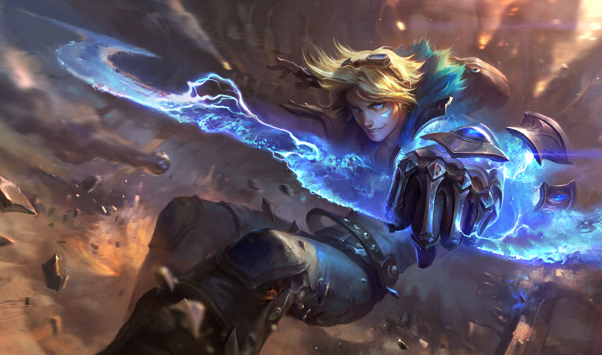
롤 속 한자어 탐구 — 점멸에서 죽음의 무도까지
召喚師의 峽谷을 갑골문으로 읽다
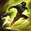
‘점멸’은 무엇이 켜지고 꺼진다는 걸까?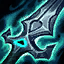
몰락한 왕의 ‘검’, 왜 ‘도’가 아닐까?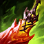
죽음의 무도의 ‘도’는 칼일까?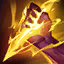
‘갱’과 ‘로밍’은 어디서 온 말일까?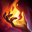
점화點火召 부를 소 · 喚 부를 환 · 師 스승 사 → 불러내는 사람, 그래서 ‘소환사’
금문은 얼굴에 먹물 점이 찍힌 사람(묵형 墨刑)으로 보는 해석이 많고, 《설문》은 ‘불길이 굴뚝을 그을린 빛’이라 풀이
卜(점괘 금) + 口(입)
여기서는 소리 ‘점’을 맡는다
《설문》 點, 小黑也
— ‘작고 검은 점’
點滅 = 켜짐 + 꺼짐 = 깜빡임
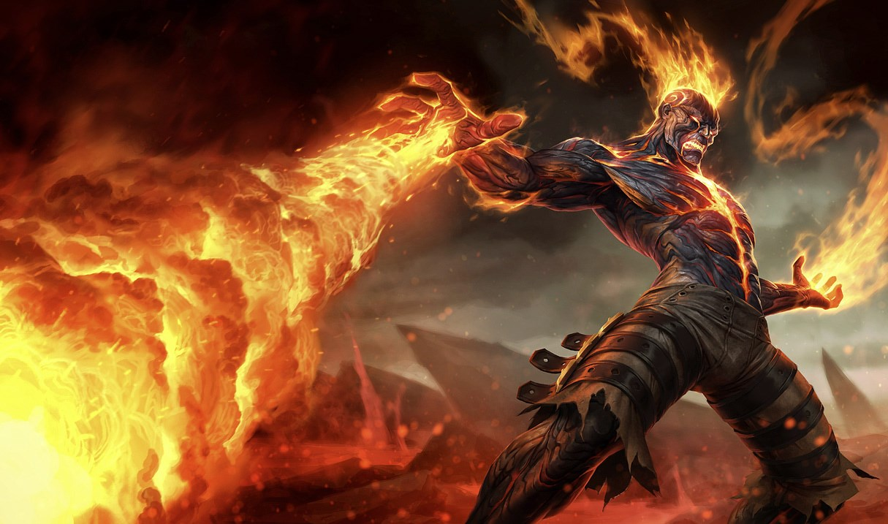
닮은꼴 火가 후대에 山으로 바뀌어 버렸습니다.
아까 퀴즈의 그 쌍둥이!
→ 뼈대를 갖춘 몸, 신체(身體)
뒤집히다 → 바뀌다 → ~이 되다 (變化 변화 · 淨化 정화)
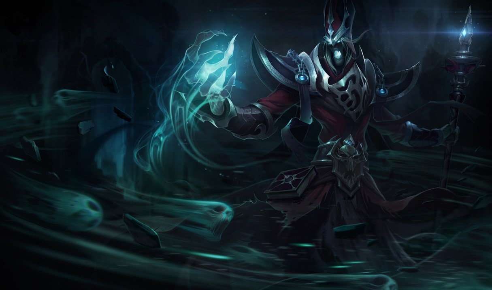
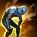
탈진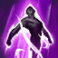
순간이동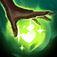
회복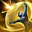
방어막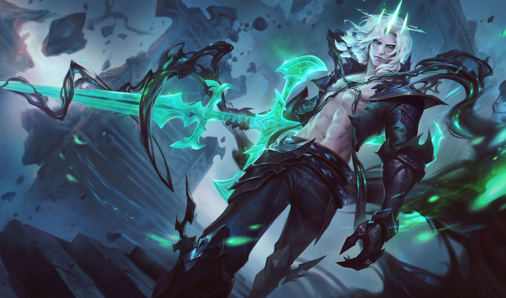
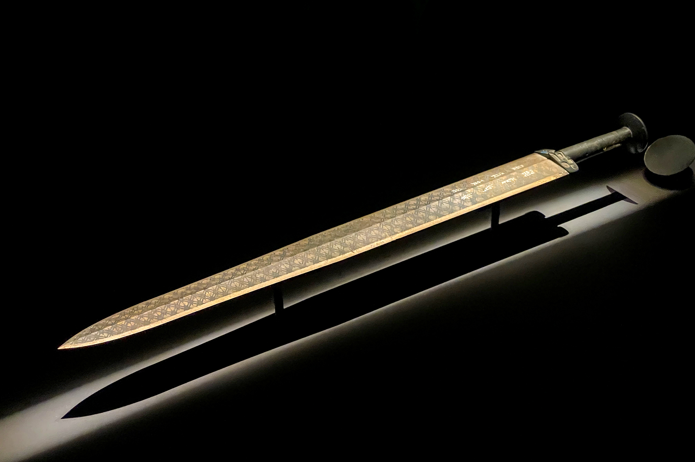
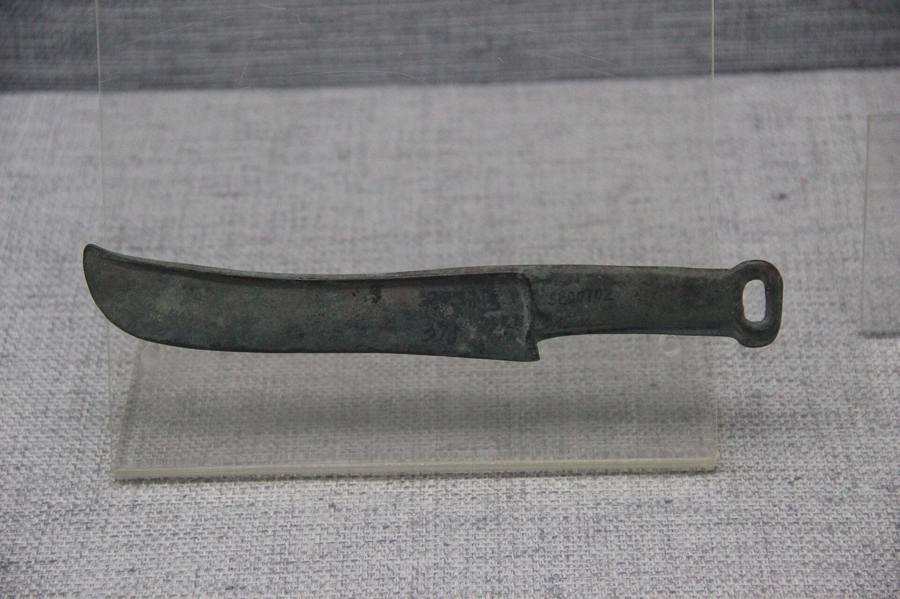
월왕 구천검(춘추 말) 명문
越王鳩淺 自作用劍
“월왕 구천이 직접 쓰려고 만든 검”
劍 = 僉(다 첨 · 소리) + 刃(칼날)
刃 칼날 인 = 刀 + 점 하나
“날은 바로 여기!”를 가리킨 글자(지사자)
곧은 양날 대검을 든 몰락한 왕 → 劍이 맞다!
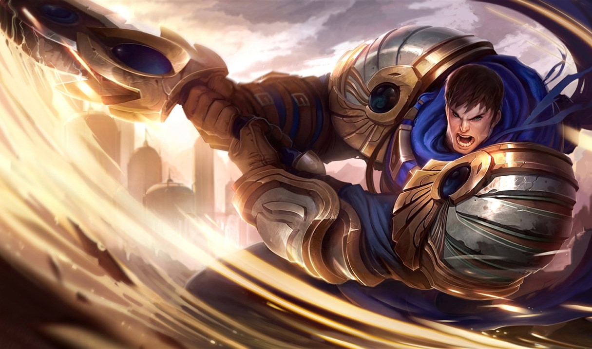
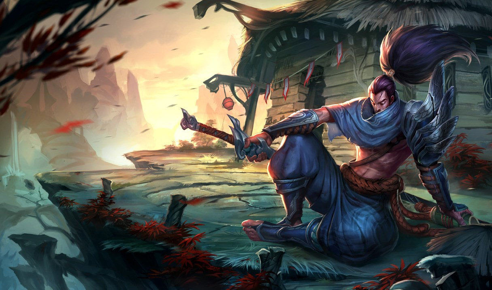
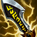
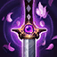
아이콘은 붉게 휜 칼날… 그렇다면 ‘무도’의 ‘도’는 칼 도(刀)?
舞蹈
손을 흔들고(舞) 발을 구르는(蹈) 춤
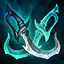
유령 무희(Phantom Dancer) = 幽靈舞姬 — 幽도 舞도 이제 읽힌다! · 생상스 「죽음의 무도」(Danse macabre)도 같은 舞蹈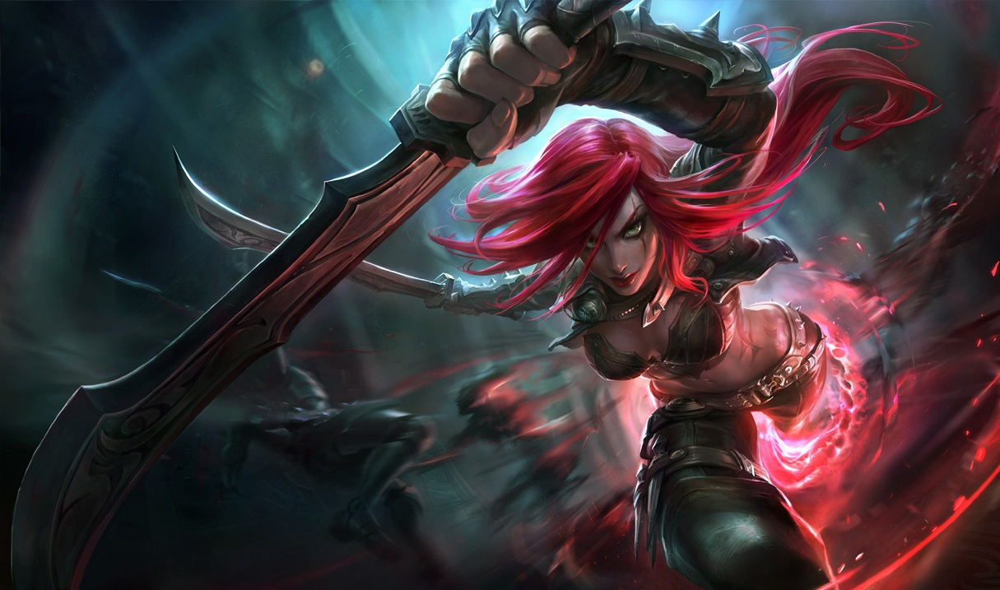
외날 칼
短刀 단도 · 面刀 면도길 · 방법 · 수련
劍道 검도 · 武道 무도발을 구르다
舞蹈 무도 — 죽음의 무도!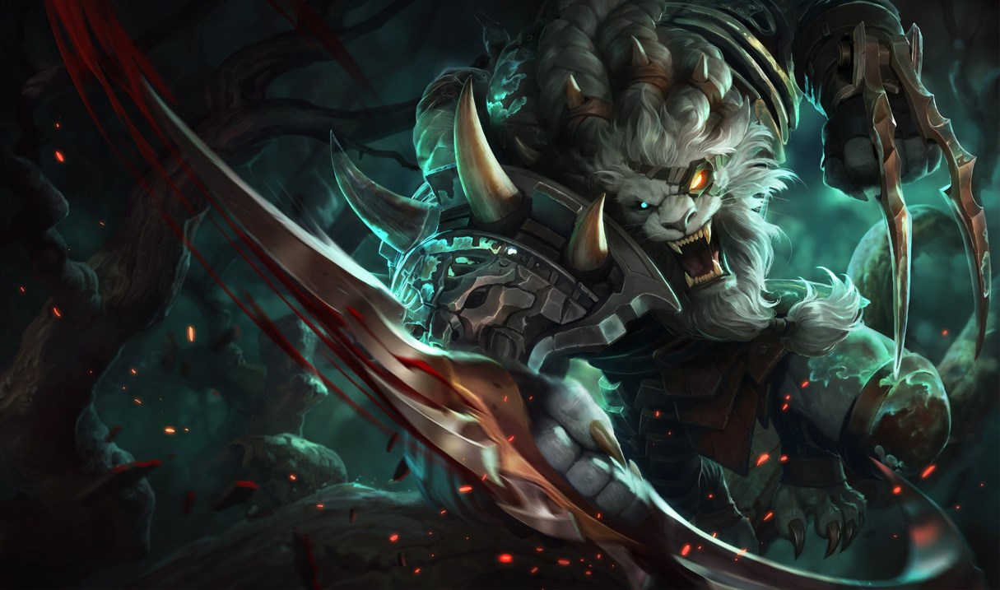
해외 로밍: 내 통신사 구역(홈)을 벗어나
다른 나라 통신사의 망에서 쓰는 것
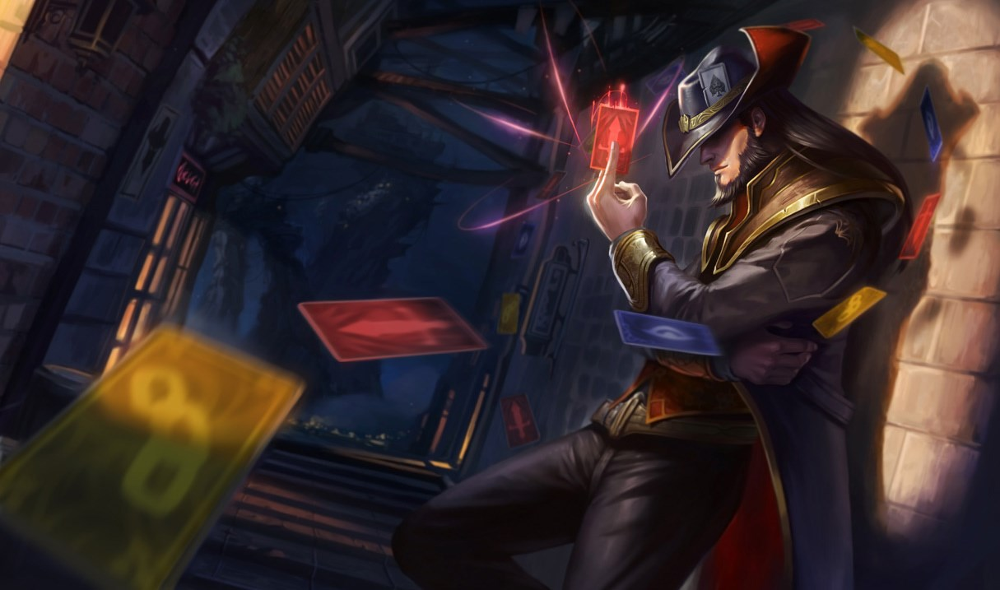
도로 위 ‘황색 점멸등’의 점멸을 한자로 쓰면?
點滅 켜졌다 꺼졌다양날의 곧은 칼은 劍일까 刀일까?
劍 刀는 외날유령(幽靈)과 유체화(幽體化)의 幽, 갑골문 속 그림은?
실타래 둘 + 火 = 희미한 불빛죽음의 무도의 ‘도’는?
蹈 밟을 도 (舞蹈 = 춤)